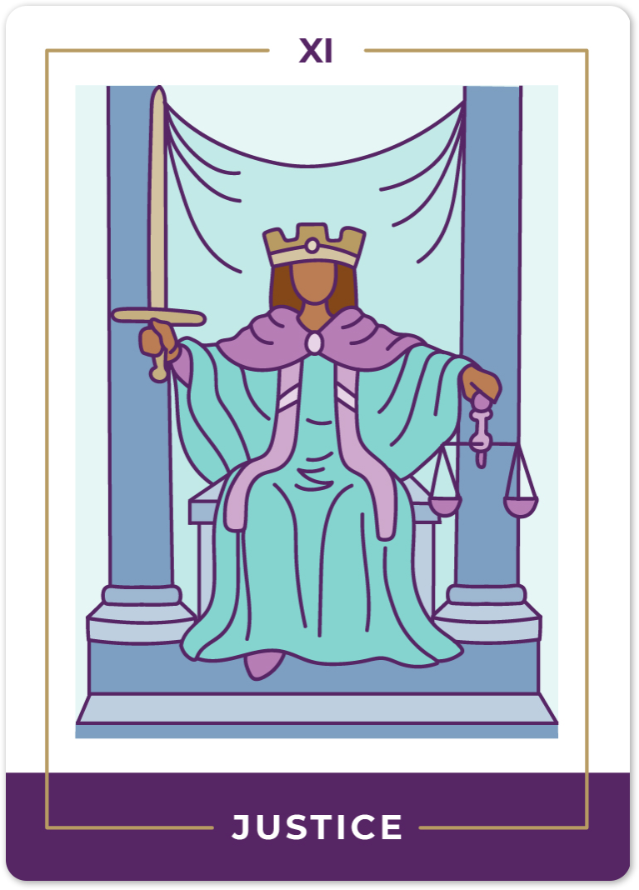
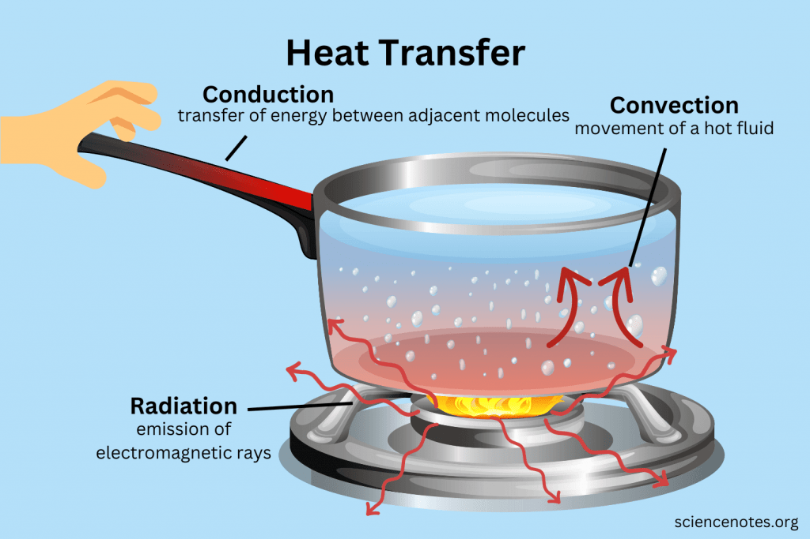

📔
Upset
Upset n.
- an unhappy and worried mental stateup😭
she didn’t realize the upset she caused me
synonymous： disturbance, perturbation
- ==the act of disturbing the mind or body==
his carelessness could have caused an ecological upset
synonymous： derangement, overthrow
- condition in which there is a disturbance of normal functioning
everyone gets stomach upsets from time to time
synonymous： disorder
-
a tool used to thicken or spread metal (the end of a bar or a rivet etc.) by forging or hammering or swaging
synonymous： swage
- the act of upsetting something
he was badly bruised by the upset of his sled at a high speed
synonymous： overturn, turnover
- an improbable and unexpected victory
the biggest upset since David beat Goliath
synonymous： overturn
upset v.
-
disturb the balance or stability of
The hostile talks upset the peaceful relations between the two countries -
cause to lose one’s composure
synonymous： discompose, untune, disconcert, discomfit
- move deeply[深深的打动]
This book upset me
synonymous： disturb, trouble
-
cause to overturn from an upright or normal position
synonymous： overturn, tip over, turn over, knock over, bowl over, tump over
- defeat suddenly and unexpectedly
The foreign team upset the local team
upset adj.
- afflicted with or marked by anxious uneasiness or trouble or grief
too upset to say anything
synonymous： disquieted, distressed, disturbed, worried
- thrown into a state of disarray or confusion
with everything so upset
synonymous： broken, confused, disordered
- used of an unexpected defeat of a team favored to win
the Bills’ upset victory over the Houston Oilers
-
mildly physically distressed
an upset stomach -
having been turned so that the bottom is no longer the bottom
the upset pitcher of milk
synonymous： overturned, upturned
Justice
justice n.
- the quality of being just or fair
synonymous： justness
- the administration of law; the act of determining rights and assigning rewards or punishments
justice deferred is justice denied
synonymous： judicature
- a public official authorized to decide questions brought before a court of justice
synonymous： judge, jurist, magistrate
Ethical
ethical adj.
- of or relating to the philosophical study of ethics
==ethical codes==
==ethical theories== - conforming to accepted standards of social or professional behavior
an ethical lawyer
ethical medical practice
an ethical problem
had no ethical objection to drinking
Ours is a world of nuclear giants and ethical infants - adhering to ethical and moral principles
it seems ethical and right
synonymous： honorable, honourable, moral
Legitim-acy
词根"legitim"来自拉丁语"legitimus"，意为"合法的"或"正当的"。这个词根指示了legitimacy的基本含义，即合法性或合理性。
词缀"-acy"是一个名词后缀，用于将一个形容词转化为一个名词。
- 合法性，合法地位
近义词：validity, legality
反义词：illegitimacy
例句：
- The government’s legitimacy was questioned after allegations of electoral fraud.
- The court’s decision confirmed the legitimacy of the contract.
Con-duct
词根：conduct的词根是“con-”，它源自拉丁语中的“conducere”，意为“引导、带领”。这个词根表达了行为或过程中引导、带领的意义。
词源：conduct的词源可以追溯到拉丁语中的“conductus”，意为“引导、带领”。这个词源进一步来自拉丁语中的“conducere”，意为“带领、引导”，由“con-”（共同）和“ducere”（引导）组成。
conduct n.
-
manner of acting or controlling yourself
==The code of conduct== 行为准则
synonymous： behavior, behaviour, doings
- (behavioral attributes) the way a person behaves toward other people
synonymous： demeanor, behavior, deportment
conduct v.
- direct the course of; manage or control
You cannot conduct business like this
synonymous： carry on, deal
- lead, as in the performance of a composition
conduct an orchestra
Barenboim conducted the Chicago symphony for years
synonymous： lead, direct
- behave in a certain manner
They conducted themselves well during these difficult times
synonymous： behave, acquit, bear, deport, comport, carry
- transmit or serve as the medium for transmission
Many metals conduct heat
synonymous： transmit, convey, carry, channel
- take somebody somewhere
He conducted us to the palace
synonymous： lead, take, direct, guide
- lead musicians in the performance of
Bernstein conducted Mahler like no other conductor
she cannot conduct modern pieces
Judic-iary
词根"judic-“，来自拉丁语词根"iudicium”，意为"裁定、判决、判断"。"Judic-“作为一个词根，常在与法律、司法等领域的词汇中出现，例如"judge”（法官）、“judgment”（判决、判断）等。
词缀"-ary"，表示"与…有关的"或"某个领域的"。在这个单词中，"-ary"表明"judiciary"是与司法系统相关的事物，是指法院、法官、法庭和其他司法机构的集合。
- 中文意思：司法（机构/部门）
-
近义词：法官团队
-
反义词：行政部门
-
例句：
-
The judiciary plays a vital role in upholding the rule of law.
-
The appointment of judges is a crucial decision for the judiciary.（“法官团队”意义下的使用）
sub-ject
subject源自拉丁语的“subjectus”，意为“被置于下方的”。在拉丁语中，这个词形容一种被征服或被控制的状态。
词根“sub-”表示“在下方”，次级的意思。在subject中，词根“sub-”表达了被置于或受控制的状态。
词缀“-ject”表示“投掷”或“放置”。在subject中，词缀“-ject”表示某人或某事被放置或安置在某种情况或条件之下。
subject n.
- the subject matter of a conversation or discussion
he didn’t want to discuss that subject
synonymous： topic, theme
- a branch of knowledge
teachers should be well trained in their subject
synonymous： discipline, subject area, subject field, field, field of study, study, bailiwick, branch of knowledge
- something (a person or object or scene) selected by an artist or photographer for graphic representation
a moving picture of a train is more dramatic than a still picture of the same subject
synonymous： content, depicted object
- a person who is subjected to experimental or other observational procedures; someone who is an object of investigation
the subjects for this investigation were selected randomly
synonymous： case, guinea pig
guinea pig: 豚鼠：一种小型、矮胖、无尾巴的家养啮齿动物（Cavia porcellus），原产于南美洲，通常作为宠物饲养，并广泛用于生物研究。

-
a person who owes allegiance to that nation[臣民]
a monarch has a duty to his subjects
synonymous： national
- (grammar) one of the two main constituents of a sentence; the grammatical constituent about which something is predicated
- (logic) the first term of a proposition
subject v.
- cause to experience or suffer or make liable or vulnerable to
He subjected me to his awful poetry
The sergeant subjected the new recruits to many drills
People in Chernobyl were subjected to radiation - make accountable for
He did not want to subject himself to the judgments of his superiors - make subservient; force to submit or subdue
synonymous： subjugate
- refer for judgment or consideration
synonymous： submit
subject adj.
- not exempt from tax
the gift will ==be subject to== taxation - possibly accepting or permitting
the time is fixed by the director and players and therefore subject to much variation
synonymous： capable, open
- being under the power or sovereignty of another or others
subject peoples
synonymous： dependent
- likely to be affected by something (especially something unpleasant)
the bond is subject to taxation
he is subject to fits of depression
Envision
envision v.
- imagine; conceive of; see in one’s mind
synonymous： visualize, visualise, project, fancy, see, figure, picture, image
- picture to oneself; imagine possible
I cannot envision him as President
synonymous： foresee
Cultivate
cultivate | ˈkʌltɪveɪt | verb [with object]
-
prepare and use (land) for crops or gardening:
the peasants who cultivated the land became its owners.
• break up (soil) in preparation for sowing or planting:
(as adjective, with submodifier cultivated) : damp, well-cultivated soil.
• raise or grow (plants), especially on a large scale for commercial purposes:
they were encouraged to cultivate basic food crops |
walnuts were cultivated for salad oil.
• Biology grow or maintain (living cells or tissue) in culture
: blood cells that can be most easily cultivated are macrophages.
-
try to acquire or develop (a quality or skill)
: he cultivated an air of indifference.
• try to win the friendship or favour of (someone):
*it helps if you go out of your way to cultivate the local people*.
**• try to improve or develop (one's mind).**
Ideology
An ideology is a set of beliefs or philosophies attributed to a person or group of persons, especially those held for reasons that are not purely epistemic, in which "practical elements are as prominent as theoretical ones."Formerly applied primarily to economic, political, or religious theories and policies, in a tradition going back to Karl Marx and Friedrich Engels, more recent use treats the term as mainly condemnatory
意识形态是归因于一个人或一群人的一套信仰或哲学，特别是那些出于非纯粹认识论的原因而持有的信仰或哲学， 其中“实践因素与理论因素一样突出”。 以前主要应用于经济，政治或宗教理论和政策，其传统可以追溯到卡尔马克思和弗里德里希恩格斯，最近的使用将这个词视为主要是谴责性的。
The term was coined by Antoine Destutt de Tracy, a French Enlightenment aristocrat and philosopher, who conceived it in 1796 as the “science of ideas” to develop a rational system of ideas to oppose the irrational impulses of the mob. In political science, the term is used in a descriptive sense to refer to political belief systems
这个词是由法国启蒙运动贵族和哲学家安托万·德斯图特·德·特雷西（Antoine Destutt de Tracy）创造的，他在1796年将其设想为“思想科学”，以发展一种理性的思想体系，以反对暴民的非理性冲动。在政治学中，该术语用于描述性意义，指代政治信仰体系。